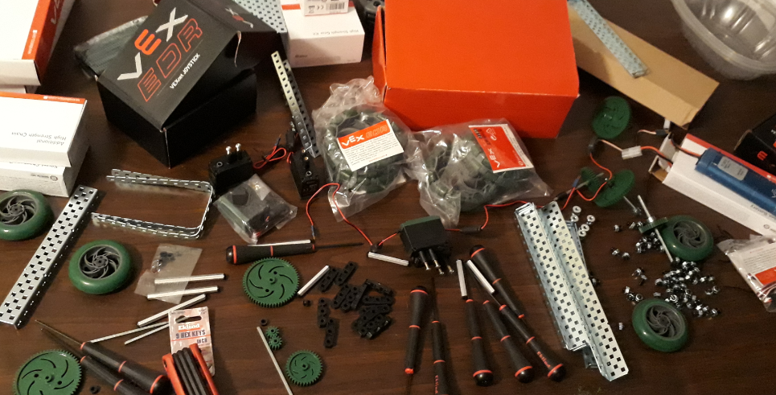
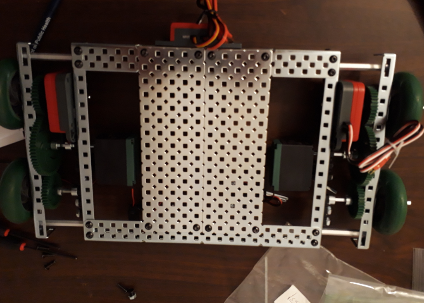
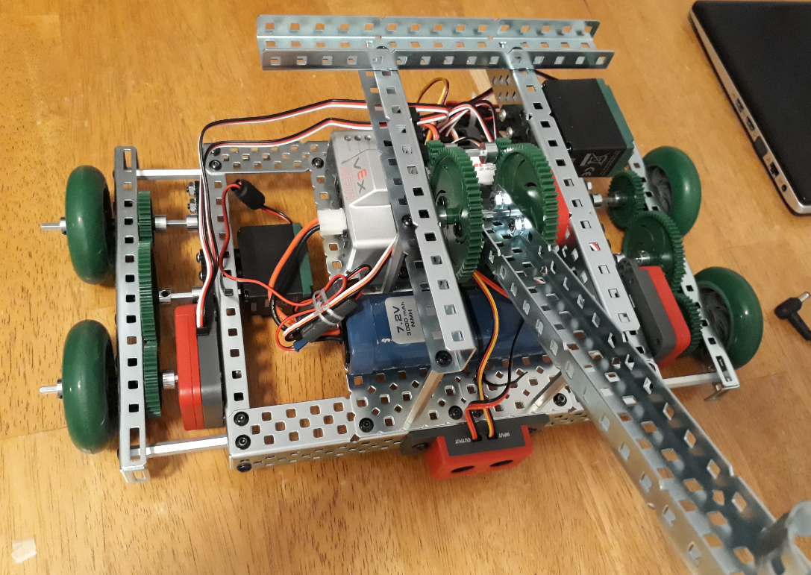

4H Jackson County Computer Club
Programs developed for Recbot (summer 2017)
- This program lets recbot perform the following tasks. After receiving the start signal, move forward 2 yards, make a 90 degree sharp left turn, move forward 2 yards, makes a 90 degree sharp righ turn, move forward 2 yards and stop (square.c)
- This program makes the recbot functioning as a remotely controlled toy with limited intelligence.(remotecontrol.c)

Parts of Recbot

Assembled base

Recbot